D
D1:
Woolmers Park, Essendon Road, Letty Green
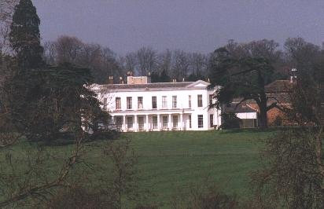
GIDEON’S WAY: Morna (Cyril Frankel,
October
1964)
Commander Gideon (John Gregson) goes to interview
Sir Robert (Ronald
Adams) and Lady Copthorne (Shelagh Fraser)
at their home near Wendley.
THE SAINT: To Kill a Saint (Robert
Asher:
November 1966)
Simon Templar is driven at gunpoint to Fellows' mansion.
THE AVENGERS: Return of the Cybernauts
(Robert Day: June 1967)
Steed (Patrick Macnee) and Mrs Peel (Diana
Rigg) arrive at Beresford's
house and leave as the Cybernaut (Terry Richards)
arrives carrying
Neville. Garnett (Anthony Dutton) flees from the
house later down to
the main road. Later Steed, in his Bentley, follows a remote-controlled
Mrs. Peel, in her Lotus, along Woolmer's Lane past the gate house and
through the gates to Bereford's house after she crashes through them.
(Spotted by Michael Richardson, 1989)
THE AVENGERS: The Curious Case of the Countless Clues
(Don Sharp: January 1968)
Earle (Anthony Bate) and Gardiner (Kenneth
Cope) arrive in a Citroen
and place false number plate on a waiting Roll Royce. Later Earle and
Gardiner watch from their Citroen as John Steed (Patrick
Macnee) leaves
Flanders' house and talks to Janice (Tracy Reed)
before driving off in
his Bentley. Later Steed is called back to the house by Janice. Steed
drops Janice off and sees the Citroen loading up with paintings and
driving off, he follows. Later Steed's Bentley breaks down on a country
road and a breakdown truck arrives driven by Stanley (Toby
Selby).
Steed overpowers Stanley and sets off in the breakdown truck. He stops
off at a phone box on the way to warn Tara.
DEPARTMENT S: The Man Who Got a New Face
(Cyril Frankel 1968)
At night a mysterious figure makes his way through the grounds of
Kolliatis' villa. He gets to the villa and climbs a drainpipe before
entering.
THE PERSUADERS!: Five
Miles To Midnight (Val Guest: 1970)
Establishing shot of the home of Count Sangallo (taken from
The Man Who
Got a New Face).
(Identified by Paul Stroud, March 2010)
D2: Hatfield Country Club,
Bedwell Park, Essendon
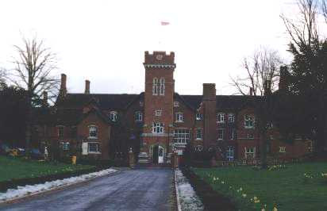
THE AVENGERS: The Rotters (Robert
Fuest:
September 1968)
Tara (Linda Thorson) arrives at the offices of
Wainwright Timber
Industries.
D3: Essendon
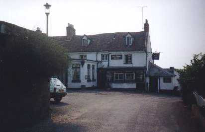
THE AVENGERS: Invasion of the
Earthmen (Don Sharp: November 1967)
Steed and Tara come under surveillance from Huxton (Christian
Roberts)
and Trump (Warren Clark) as they search Grant's
room (The Salisbury
Crest, West End Lane - converted to residential 'The Crest') and are followed when they leave.
(Spotted by Michael Richardson, 1989)
THE PROTECTORS: Wheels (David
Tomblin: 1973)
A point on the route of Harry’s Ford Escort rally car. The route also
takes a turn into a farmyard (Essondonbury Farm – on the B158)
and
continues through to fields beyond.
D4: St. Andrew's Church,
Little Berkhamsted
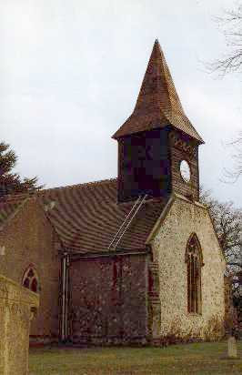
THE AVENGERS: The Rotters
(Robert Fuest: September 1968)
Kenneth (Gerald Sim) and George (Jerome
Willis) arrive at the church
where Pym is at work, and destroy the bell tower that night before
Steed and Tara can arrive.
D5: Knebworth House, Old
Knebworth, nr. Stevenage £
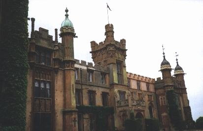
DANGER MAN: The Sanctuary (Charles
Frend:
1959)
Drake and Mrs. Crawford arrive at Loch Doon house in a Humber estate.
The following day, Drake (Patrick McGoohan) and
Crawford (Kieron Moore)
leave by Landrover for Ranoch Point. Pursued by Crawford and his men,
Drake returns to the house on foot, and attempts to escape in the
Humber. Forced to reverse by Mrs. Crawford's Hiliman, his escape is
blocked by Crawford's Landrover. Leaving Brannigan (Shay
Gorman) on
guard, Crawford follows Drake and Mrs. Crawford (Wendy
Williams) into
the house. After talking to Mullins (Peter Murray),
Crawford leaves for
the station with his wife and Drake.
GIDEON’S WAY: Morna (Cyril
Frankel,
October 1964)
A fisherman
finds shoe whilst fishing he finds a
body (lake by Wintergreen Woods), to the home of the village constable
(Gardener's Cottage) to raise the alarm.
(Identified by Sietse Postma, January 2024)
THE CHAMPIONS: The Night People (Robert
Asher:
June 1967)
Whilst on holiday Sarron (Alexandra Bastedo)
arrives at Trennick House
to lookround, as she leaves she notices strange marks on the drive.
Richard (William Gaunt) calls in at the house when
Sharron goes missing
and tries to contact her as he leaves. Craig (Stuart Damon)
follows
Mrs. Trennick (Adrienne Corri) into the county
witchcraft museum. That
night Richard and Craig break into the house to rescue Sharron. The two
agents manage to solve the riddle of Trennick house and arrest Douglas
Trennick (Terence Alexander), Jane Soams (Anne
Sharp) and Hoad (Jerold
Wells).
THE AVENGERS: Invasion of the Earthmen (Don
Sharp: November 1967)
The Alpha Academy students in their Land Rover escort Tara and Steed in
his AC 427 to the main building.
HERE COME THE DOUBLE DECKERS!:
Happy Haunting (Harry
Booth: 1969)
Albert (Melvyn Hayes) drives Scooper (Peter
Firth), Spring (Brinsley
Forde), Billie (Gillian Bailey), Brains (Michael
Audreson), Doughnut
(Douglas Simmonds), Sticks (Bruce Clark),
Tiger (Debbie Russ) and
Albert (Melvyn Hayes) to look round a newly opened
stately home. The
butler, Hodge (Clive Dunn) shows the gang around
the house whilst
Doris, the maid (Pat Coombs) helps The Duke (Frederick
Peisley) and
Dutchess (Ruth Kettlewell) with the preparations.
RANDALL AND HOPKIRK [DECEASED]:
Somebody Just Walked Over My Grave
(Cyril Frankel: Summer 1969)
Lord Mandrake takes Jeff back to Mandrake House for some first aid.
Jeannie arrives in the Mini to pick up Jeff. Later Dighton (Bernard
Kay) and Harper (Geoffrey Hughes) deliver
their ransom note to the
house but Dighton is seen by Sandra (Patricia Haines).
Eventually they
persuade a young boy to deliver the note.
THE PERSUADERS! (1970)
The house is seen in the opening title sequence for each episode.
THE ADVENTURER: Action! (Barry Morse:
1972)
Ann Somerby (Natasha Pyne) follows the limousine
carrying Bradley (Gene
Barry) chauffeured by John Campbell (John Collin)
to a meeting with
Carl Bruner (David Lampton), Lola Wells (Alexandra
Bastedo) and Peter
Maller (Bob Cartland) where he is told that he is
there to discuss a
script for a film.
HAMMER HOUSE OF MYSTERY AND SUSPENSE:
Black Carrion (John
Hough: Spring 1984)
Cora (Season Hubley) and Paul (Leigh
Lawson) discover the country
retreat of the Verne Brothers, Ray (Allan Love) and
Ron (Julian
Littman). This triggers memories of the events that led to
the death of
her mother, Ellen (Linda Hayden) when Cora was a
little girl (Jessica
Marshall-Gardiner). The estate manager (Oscar
Quitak) is too late to
prevent the landlord (Forbes Collins) and the rest
of the villagers
from lynching Ron. The police (John Patrick, Geoffrey Leesley)
arrive
just in time to save Paul and Cora from the same fate.
LOVEJOY: Montezuma's Revenge (William
Brayne: 1990)
Bikers escort Eric (Chris Jury) to meet Lovejoy (Ian
McShane) and
Tinker (Dudley Sutton) who are watching the Dead
Lizards (Cougar)
perform. Jeff Diamond (Trevor Byfield) introduces
himself and later
Lovejoy confronts Diamond and Rosita Lusemillo (Katia
Caballero). Lady
Jane (Phyllis Logan), Alexander (Pavel
Douglas) and Mrs. May arrive and
they all leave together as Nick Bellenger (Mark Crowdy)
turns up.
Films:
IN THE NICK (1960)
SHE'LL HAVE TO GO
(1961)
THE V.I.P.S (1963)
THE DECLINE AND FALL… OF A
BIRDWATCHER (1967)
TRIAL BY COMBAT (1976)
HORROR HOSPITAL (1973)
KEEP IT UP DOWNSTAIRS
(1976)
THE BIG SLEEP (1978)
THE MONSTER CLUB
(1980)
THE SHOOTING PARTY
(1984)
HAUNTED HONEYMOON
(1988)
THE LAIR OF THE WHITE WORM
(1988)
WILT (1989)
BATMAN (1989)
Television:
CARRY ON LAUGHING: Under
the Round Table (1975)
CARRY ON LAUGHING: Short
Knight, Long Daze (1975)
PORTERHOUSE BLUE (1987)
D6: A1 Junction 4/A414 nr.
Hatfield
THE PROTECTORS: Blockbuster (Jeremy
Summers:
1973)
Bailey drives his yellow sports car north to pick up his hoard of gold.
D7: St. Giles Church,
Codicote
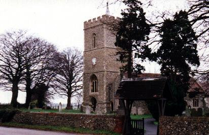
THE AVENGERS: Invasion of the
Earthmen (Don Sharp: November 1967)
Tara is driven by Steed in his AC 427 to the Alpha Academy and passes
the church on the way, followed by an Academy Land Rover.
D8: Heathmount School,
Woodhall Park, Watton-at-Stone
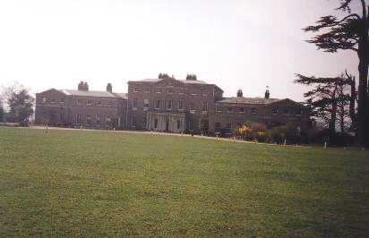
INSPECTOR MORSE: Fat Chance
(Roy Battersby: 1990)
Freddy Galt (Kenneth Haigh) is visited at his
health farm by Emma (Zoe
Wanamaker). Later Galt, watched by Hank Briardale (William
Roberts), is
attacked by Dinah Newberry (Caroline Ryder) just as
Chief Inspector
Morse (John Thaw) and Det. Sgt. Lewis (Kevin
Whately) arrive.
D9: Old Hatfield
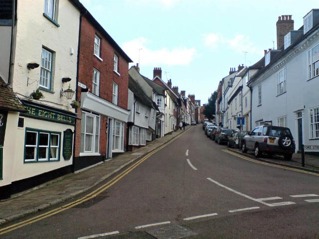
photo: Geoff Dodd
DANGER MAN: Colony Three (Don
Chaffey: July
1964)
Richardson (Peter Arne) shows Drake (Patrick
McGoohan), posing as the
defector Fuller, around the colony (Fore Street).
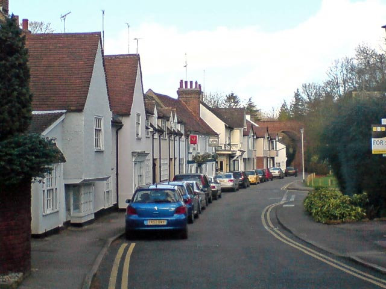
photo: Geoff Dodd
THE AVENGERS: The Morning After (John
Hough:
October 1968)
Steed and Merlin handcuffed together walk through the deserted streets
(Fore Street, Park Street and Salsbury Square),
passing a looted shop.
An army Landrover drives through the town and later the two men steal a
Landrover and drive off with it.
INSPECTOR MORSE: Driven to Distraction (Sandy
Johnson: 1989)
The murderer follows his next victim as she leaves the shopping
precinct car park in her Volkswagen and drives up Church Street.
Television:
A SHARP INTAKE OF BREATH:
Wheels (1979)
D10: Sherrardspark School,
Lockleys, Hertford Road (B1000), Welwyn Garden City
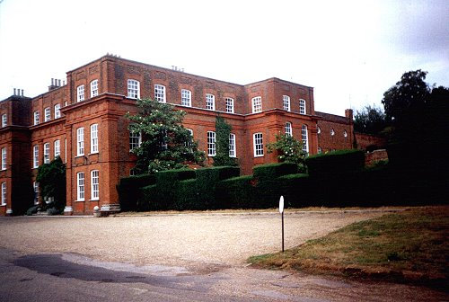
THE SAINT: The Imprudent Politician (John
Moxey: July 1964)
Sir Christopher Waites drives by the Hertford Road viaduct on his way
home. Later Simon arrives at the Waites' house for the weekend.
D11: McMullen &
Sons, The Hertford Brewery, Hertford
INSPECTOR MORSE: The Sins of the Fathers (Peter
Hammond: 1989)
Chief Inspector Morse (John Thaw) goes to Farmer's
Brewery to talk to
George Bird about the proposed buy out of Radford and Son's.
D12: Splashland,
Stanbrough Park, Welwyn Garden City £
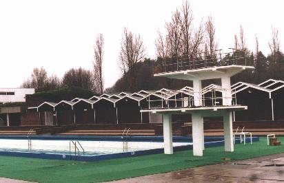
THE AVENGERS: The Bird Who Knew Too Much (Roy
Rossotti: October 1966)
A sniper, Robin (Clive Colin-Bowler), uses a diving
platform as a
vantage point to shoot at Mrs. Peel and Jordan. Mrs Peel manages to
approach the swimming pool unseen and overpowers Robin.
D13: Stevenage Moat House,
Stevenage £
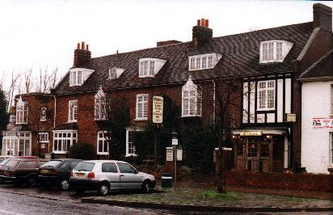
THE SAINT: The Fellow Traveller
(Peter Yates: 1962/63 ??)
Simon Templar's Volvo pulls up in front of the hotel and he enters with
a suitcase.
D14: Viaduct, B1000, High
Welwyn
THE SAINT: The Rhine Maiden (James
Hill:
November 1964)
As The Saint's Volvo approaches the viaduct, the Rhine Maiden passes
overhead.
D15: St Albans Road East,
Hatfield
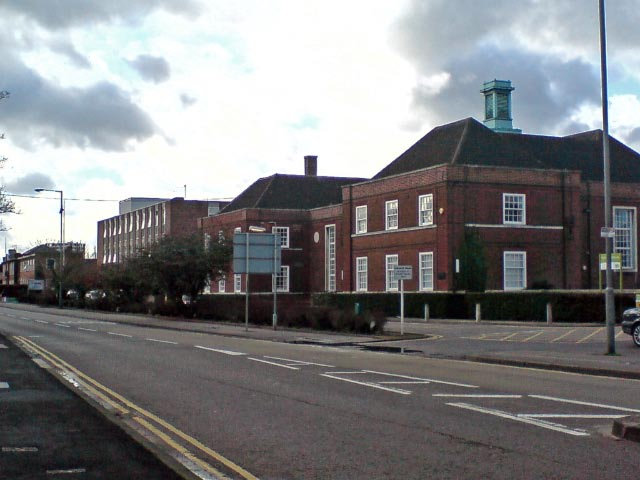
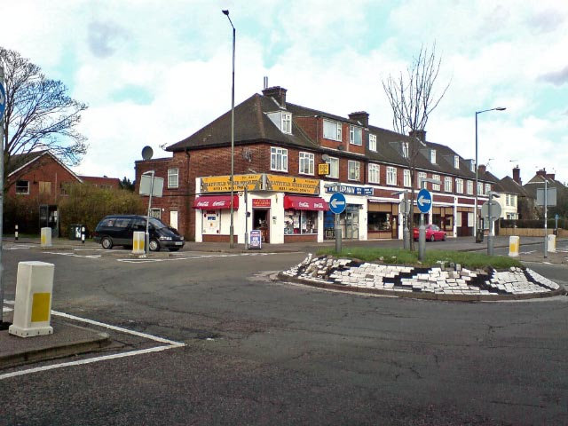
photos Geoff Dodd
THE SAINT: The Fellow Traveller (Peter
Yates: January 1963)
The Saint arrives in his Volvo at Stevenage Police Station (corner
of
St Albans Road East and Ground Lane, the actual police station has been
demolished) to report a murder.
(Identified by Geoff Dodd, June 2005)
D16: Panshanger Airfield
nr. Welwyn Garden City
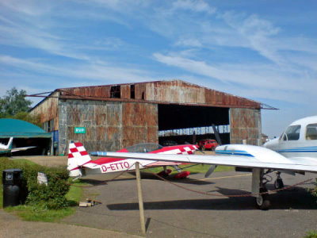
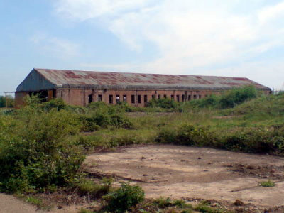
photos: Goff Dodd
THE SAINT: Where the Money Is (Roger
Moore: Summer 1968)
Simon Templar (Roger Moore) drives to the deserted
airfield to meet the
kidnappers German (Derek Newark) and Jean Latour (Sandor
Elés).
(Spotted by Ivor Williams, May 2004, confirmed by John Viney,
August
2006 and Geoff Dodd May 2007)
THE CHAMPIONS: Project Zero (Don
Sharp: Autumn
1967)
Richard Barrett joins other top scientists of a charter flight to
Scotland. When they loose contact with Richard, Sharron and Craig
follow in his steps. When they arrive they are taken to the control
tower to be briefed. After the scientists start to question the aims
Dr. Voss, the Project Zero leader, he has the fission gun loaded aboard
the plane. Sharron (Alexandra Bastedo) manages to
escape and she
watches as the the guns is fitted to the plane. Later Voss attempts to
obliterate the laboratory before the rest of the staff can escape, he
has the plane low above the project base.
(Spotted by Ivor Williams, February 2007)
D17: Sue Ryder Care Home,
Stagenhoe, St. Paul's Walden
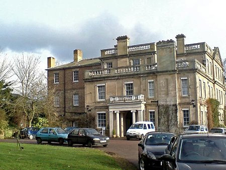
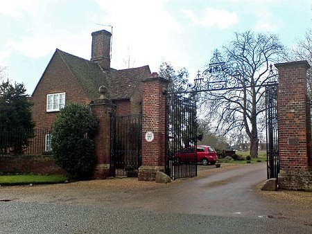
photos: Geoff Dodd
THE SAINT: The Art Collectors (Roy
Baker:
November 1966)
Simon Templar drives Countess Natasha Wanova and her driver, Hans, to
her house 30km outside Paris. Joseph (James Maxwell)
posing as Marcel
Legrand visits the house to view the paintings. Later, Bernard (Bryan
Kendrick) and Serge (Peter Bowles) arrive
to collect the paintings.
(Spotted by Geoff Dodd, January 2007)
THE SAINT: Invitation to Danger (Roger
Moore: March 1967)
Simon drives Reb Denning, in his Volvo, to a party at a country house.
(Spotted by Geoff Dodd, January 2007)
D18: B651, St. Paul's
Walden
THE SAINT: The Art Collectors (Roy
Baker:
November 1966)
Marcel Legrand (Geoffrey Bayldon) is followed by
Mundt (Garfield
Morgan) and Gunter (Richard Shaw) who
have been waiting for him on a
country road (B651 near Stagenhoe). They overtake
him and block the
road ahead. After forcing Legrand out of his car at gunpoint they knock
him out and kidnap him.
(Geoff Dodd, January 2007)
D19: Water Hall, Quarry,
B158 nr. Bayford
THE PROTECTORS: Wheels (David
Tomblin: 1973)
The quarry on the route that Harry’s Ford Escort rally car takes.
D20: Rye House Kart Track,
Hoddesdon
THE HUMAN JUNGLE: The Quick and the Dead (Roy
Baker, ???)
Dr. Roger Corder (Herbert Lom) and Dr. Jimmy Davis (Michael
Johnson)
take Jimbo Harris (Richard Johnson) to a go-kart
track so he can prove
his fitness to race. As soon as he gets into the kart his wife Paula
(Joanne Dainton) and their son Bobby Harris (David
McAlister) arrive.
Doctor Corder is trying a little experiment.
HERE COME THE DOUBLE DECKERS!:
The Go-Karters (Harry
Booth: 1969)
(Spotted by David Noades, 2000)
To E